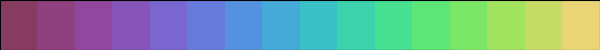

Cubehelix was designed by D.A. Green to provide a color mapping that would degrade gracefully to grayscale without losing information. This quality makes Cubehelix useful for continuous color scales in scientific visualizations that might be printed in grayscale at some point.
The palettable.cubehelix module provides several pre-made Cubehelix palettes, or you can make your own.
See Also
- A colour scheme for the display of astronomical intensity images, D.A. Green (2011) Bulletin of the Astronomical Society of India, 39, 289
- Cubehelix, or How I Learned to Love Black & White Printers by James Davenport.
Contents
-
Previews
Previews
classic_16
cubehelix1_16

cubehelix2_16
cubehelix3_16
jim_special_16
perceptual_rainbow_16

purple_16
red_16
Making your own Cubehelix palette
With the Cubehelix.make classmethod you can create arbitrary Cubehelix palettes.
For example:
from palettable.cubehelix import Cubehelix palette = Cubehelix.make(start=0.3, rotation=-0.5, n=16)
and then use that palette instance as usual.
Cubehelix.make Argument Reference
start(scalar, optional). Sets the starting position in the RGB color space. 0=blue, 1=red, 2=green. Default is0.5(purple).rotation(scalar, optional). The number of rotations through the rainbow. Can be positive or negative, indicating direction of rainbow. Negative values correspond to Blue→Red direction. Default is-1.5.start_hue(scalar, optional). Sets the starting color, ranging from (-360, 360). Combined withend_hue, this parameter overridesstartandrotation. This parameter is based on the D3 implementation by @mbostock. Default isNone.end_hue(scalar, optional) Sets the ending color, ranging from (-360, 360). Combined withstart_hue, this parameter overridesstartandrotation. This parameter is based on the D3 implementation by @mbostock. Default isNone.gamma(scalar, optional). The gamma correction for intensity. Values ofgamma < 1emphasize low intensities whilegamma > 1emphasises high intensities. Default is1.0.sat(scalar, optional). The uniform saturation intensity factor.sat=0produces grayscale, whilesat=1retains the full saturation. Settingsat>1oversaturates the color map, at the risk of clipping the color scale. Note thatsatoverrides bothmin_statandmax_satif set.min_sat(scalar, optional). Saturation at the minimum level. Default is1.2.max_sat(scalar, optional). Satuation at the maximum level. Default is1.2.min_light(scalar, optional). Minimum lightness value. Default is0.max_light(scalar, optional). Maximum lightness value. Default is1.n(scalar, optional). Number of discrete rendered colors. Default is256.reverse(bool, optional). Set toTrueto reverse the color map. Will go from black to white. Good for density plots where shade → density. Default isFalse.name(str, optional). Name of the color map (defaults to'custom_cubehelix').